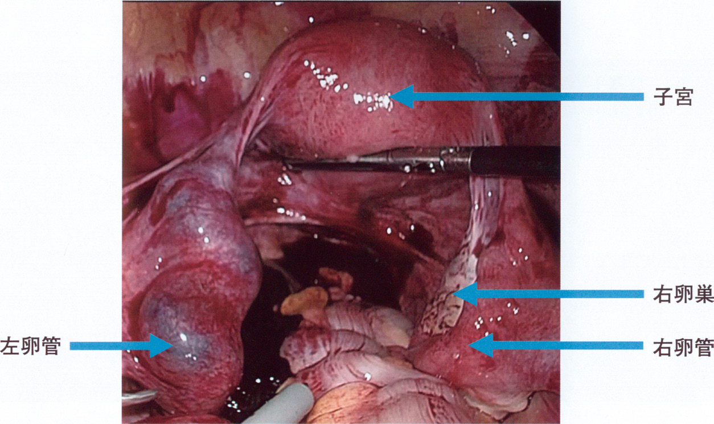
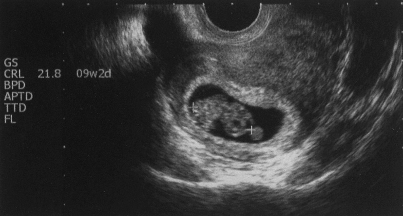
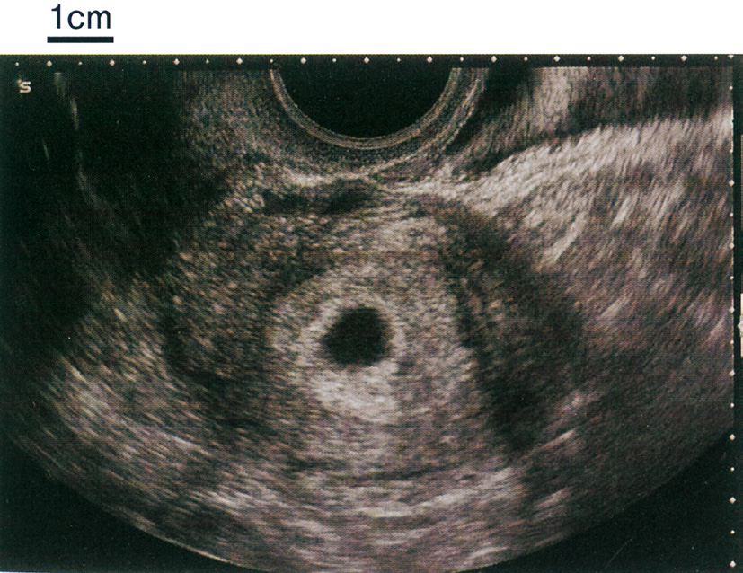
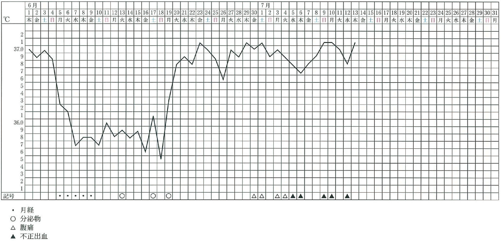

| 選択肢 | 評価 |
|---|---|
| ａ Chlamydia pneumoniae | 肺炎（呼吸器感染）の起炎菌。性感染症ではない |
| ｂ Chlamydia trachomatis | 正しい。卵管炎 → 卵管性不妊・異所性妊娠の最大の原因 |
| ｃ Gardnerella vaginalis | 細菌性腟症の起炎菌。上行感染で早産の一因とはなるが卵管炎は起こしにくい |
| ｄ Treponema pallidum | 梅毒。先天梅毒の原因となるが卵管性不妊の原因ではない |
| ｅ Trichomonas vaginalis | トリコモナス腟炎。泡沫状悪臭帯下・掻痒 |
| 選択肢 | 評価 |
|---|---|
| ａ 緊急手術 | 正しい。腹腔鏡下または開腹での患側卵管切除術 |
| ｂ 子宮鏡検査 | 不適切。子宮腔内の観察であり腹腔内出血には無意味 |
| ｃ 子宮動脈塞栓術 | 不適切。頸管妊娠や産科危機的出血で考慮するが、卵管妊娠破裂のショック例では確実な止血ができない |
| ｄ 1 週間経過観察 | 禁忌。ショック状態であり数時間で致死的となる |
| ｅ 葉酸代謝拮抗薬投与 | 不適切。メトトレキサート療法は未破裂・全身状態安定・hCG低値の症例に限られる |
| 選択肢 | 評価 |
|---|---|
| ａ ACE阻害薬 ─ 羊水過多症 | 誤り。ACE阻害薬・ARBは胎児腎障害・無尿を起こし羊水過少をきたす（妊娠中は禁忌） |
| ｂ 吸入副腎皮質ステロイド ─ 早産 | 誤り。吸入ステロイドは妊娠中も安全に使用できる（喘息のコントロール不良のほうが早産リスク） |
| ｃ ミソプロストール ─ 脳出血 | 誤り。ミソプロストール（PGE₁製剤）は子宮収縮を起こし流産・子宮破裂をきたす（妊娠中は禁忌） |
| ｄ インドメタシン ─ 動脈管収縮 | 正しい |
| ｅ ミノサイクリン ─ 水腎症 | 誤り。テトラサイクリン系は歯牙の着色（黄染）・エナメル質形成不全・骨発育障害 |
| 薬剤 | 児への影響 |
|---|---|
| ワルファリン | 妊娠初期＝軟骨形成不全・鼻低形成／後期＝胎児頭蓋内出血 |
| ACE阻害薬・ARB | 胎児腎障害・無尿・羊水過少・頭蓋骨形成不全 |
| NSAIDs（インドメタシン等） | 動脈管収縮・羊水過少 |
| テトラサイクリン系 | 歯牙着色・骨発育障害 |
| アミノグリコシド系 | 第Ⅷ脳神経障害（先天性難聴） |
| メトトレキサート | 催奇形性（頭蓋・四肢異常）。妊娠前に中止 |
| バルプロ酸・カルバマゼピン | 二分脊椎（神経管閉鎖障害） |
| サリドマイド | アザラシ肢症〈phocomelia〉 |
| ミソプロストール | 流産・Möbius症候群 |
| 放射性ヨウ素・抗甲状腺薬（チアマゾール） | 胎児甲状腺機能低下／MMI奇形症候群 |
| 選択肢 | 評価 |
|---|---|
| ａ 子宮奇形 | 後期流産・反復流産の原因となるが頻度は低い |
| ｂ 子宮筋腫 | 粘膜下筋腫は着床障害・流産の一因だが頻度は低い |
| ｃ 頸管無力症 | 後期流産の代表的原因。早期流産は起こさない |
| ｄ 胚染色体異常 | 最多。早期流産の約50〜70% |
| ｅ 抗リン脂質抗体症候群 | 反復流産・胎児死亡の原因だが頻度は数% |
| 状況 | 届出 |
|---|---|
| 妊娠12週未満の流産 | 死産届 不要 |
| 妊娠12週以後の死産（流産・死産） | 死産届 必要（7日以内） |
| 妊娠22週以後で生産（生きて生まれた） | 出生届（14日以内）。死亡すれば死亡届も |
| 人工妊娠中絶（妊娠12週以後） | 死産届が必要 |
| 選択肢 | 評価 |
|---|---|
| ａ ヘパリン | 正しい。胎盤を通過せず、低用量アスピリンと併用する |
| ｂ ビタミンD | 無効。不育症の治療薬ではない |
| ｃ ビタミンK | 逆効果。凝固を促進し血栓形成を助長する |
| ｄ エストロゲン | 逆効果。凝固能を亢進させ血栓リスクを高める |
| ｅ 黄体ホルモン | 不適切。本例は黄体機能不全ではない（基礎体温2相性・高温相14日間で黄体機能は正常） |
| 選択肢 | 評価 |
|---|---|
| ａ 子宮破裂 | 妊娠後期〜分娩時。帝王切開既往の子宮に起こる |
| ｂ 前置胎盤 | 妊娠後期。胎盤が完成し子宮下節が伸展してから無痛性の性器出血をきたす。妊娠初期には胎盤自体が完成していない |
| ｃ 癒着胎盤 | 分娩時。胎盤が剝離せず大量出血をきたす |
| ｄ 絨毛膜下血腫 | 正しい。妊娠初期の切迫流産に伴う出血 |
| ｅ 常位胎盤早期剝離 | 妊娠中期以降。持続する腹痛・板状硬の子宮・胎児機能不全を伴う |
| 選択肢 | 評価 |
|---|---|
| ａ 脳 | 頭蓋内出血はワルファリン使用時に注意する部位 |
| ｂ 肺 | 肺低形成は羊水過少の持続で生じるが、本例は羊水量正常 |
| ｃ 肝臓 | NSAIDsによる胎児肝障害は問題にならない |
| ｄ 動脈管 | 正しい。NSAIDsによる収縮・早期閉鎖を確認する |
| ｅ 消化管 | 新生児壊死性腸炎はインドメタシン投与後の未熟児で問題となるが、本問の胎児評価の対象ではない |
| 病型 | 子宮口 | 内容物 | 胎児心拍 | 対応 |
|---|---|---|---|---|
| 切迫流産 | 閉鎖 | なし | あり | 妊娠継続可能。安静・経過観察 |
| 進行流産 | 開大 | 進行中 | あり／なし | 妊娠継続不能。子宮内容除去術 |
| 不全流産 | 開大 | 一部残存 | なし | 子宮内容除去術 |
| 完全流産 | 閉鎖（縮小） | すべて排出済 | なし | 経過観察 |
| 稽留流産 | 閉鎖 | なし | なし（子宮内で死亡し停留） | 子宮内容除去術／待機 |
| 選択肢 | 評価 |
|---|---|
| ａ 完全流産 | 誤り。子宮内容がすべて排出された状態。本例は胎囊が残り心拍もある |
| ｂ 稽留流産 | 誤り。胎児が死亡して子宮内にとどまる状態。本例は心拍動あり |
| ｃ 進行流産 | 誤り。子宮口が開大し内容が排出されつつある状態。本例は子宮口閉鎖 |
| ｄ 切迫流産 | 正しい |
| ｅ 不全流産 | 誤り。内容の一部が排出され一部が残存した状態 |

| 妊娠週数 | CRL |
|---|---|
| 妊娠8週0日 | 約16mm |
| 妊娠9週2日 | 約25mm |
| 妊娠10週0日 | 約31mm |
| 妊娠11週0日 | 約41mm |
| 妊娠12週0日 | 約53mm |
| 選択肢 | 評価 |
|---|---|
| ａ 「人工妊娠中絶を行いましょう」 | 不適切。奇形リスクの根拠がなく、患者を追い詰める |
| ｂ 「妊娠中に使える薬はありません」 | 誤り。アセトアミノフェン・ペニシリン系など安全に使える薬は多い |
| ｃ 「内服したのは着床のころなので心配はありません」 | 正しい。妊娠2週5日＝無影響期 |
| ｄ 「内服したこの薬によって胎児の先天異常の頻度が増加します」 | 誤り。無影響期の内服であり増加しない |
| ｅ 「薬を飲まなくても胎児の先天異常は0.1％の頻度で起こります」 | 誤り。自然発生の先天異常の頻度は約3〜5%であり、0.1%ではない。桁を誤った数値を伝えると、かえって不安を与える |
| 選択肢 | 評価 |
|---|---|
| ａ 両側卵管切除術 | 不適切。健側を切除すれば自然妊娠が不可能になる |
| ｂ 右側付属器摘出術 | 過剰。卵巣に病変はなく温存すべき |
| ｃ 右側卵管切除術 | 正しい。出血源の除去と再発予防が同時に達成される |
| ｄ 右側卵管結紮術 | 不十分。破裂部からの出血は止まらない |
| ｅ 右側卵巣提索結紮術 | 不適切。卵巣への血流を絶つだけで卵管出血は止まらない |
| 選択肢 | 評価 |
|---|---|
| ａ ACE阻害薬 | 羊水過少。胎児腎障害・無尿 |
| ｂ 副腎皮質ステロイド | 羊水量に影響しない。早産予防の胎児肺成熟目的で用いる |
| ｃ カルシウム拮抗薬 | 妊娠高血圧症候群の降圧薬として使用可能。羊水量に影響しない |
| ｄ 抗甲状腺薬 | 胎児甲状腺機能低下・甲状腺腫を起こしうるが羊水過少は起こさない |
| ｅ NSAID | 羊水過少。胎児腎血流減少＋動脈管収縮 |
| 異常 | 原因 |
|---|---|
| 羊水過少 | 尿が作れない：腎無形成〈Potter症候群〉・多囊胞性異形成腎・後部尿道弁 薬剤：ACE阻害薬・ARB・NSAIDs その他：前期破水・胎盤機能不全〈FGR〉・過期妊娠 |
| 羊水過多 | 嚥下できない：食道閉鎖・十二指腸閉鎖・無脳症 尿が多い：母体糖尿病・双胎間輸血症候群の受血児 その他：胎児水腫 |
| 薬剤 | 妊娠時の扱い |
|---|---|
| メトトレキサート | 禁忌。妊娠前に中止する |
| タクロリムス | 妊娠中も使用可（膠原病合併妊娠で選択される免疫抑制薬） |
| サラゾスルファピリジン | 妊娠中も使用可（葉酸を併用する） |
| 副腎皮質ステロイド（プレドニゾロン） | 妊娠中も使用可。胎盤で不活化され胎児移行が少ない |
| エタネルセプト等の生物学的製剤 | 妊娠初期は使用可とされる（IgG1製剤は妊娠中期以降に胎盤移行）。中止時期は個別に検討 |
| NSAIDs（インドメタシン等） | 妊娠後期は禁忌（動脈管収縮） |
| レフルノミド | 禁忌。半減期が長く、中止後もコレスチラミンで除去してから妊娠する |
| 選択肢 | 評価 |
|---|---|
| ａ 尿ケトン体 | まず行う。非侵襲的・即時に飢餓性ケトーシスを判定できる |
| ｂ 血中hCG 定量 | 胞状奇胎・多胎の鑑別には有用だが、超音波で単胎の正常妊娠と確認済み |
| ｃ 甲状腺機能検査 | 妊娠一過性甲状腺機能亢進症の鑑別に有用だが、頻脈・振戦・甲状腺腫の記載がなく初手ではない |
| ｄ 動脈血ガス分析 | 重症例で代謝性アシドーシスを評価するが侵襲的で初手ではない |
| ｅ 上部消化管内視鏡検査 | 不適切。妊娠経過に一致した悪心・嘔吐であり消化管精査は不要 |
| 選択肢 | 評価 |
|---|---|
| ａ 年齢 | 関連あり。加齢で胚染色体異常が増加 |
| ｂ 甲状腺機能低下症 | 関連あり。未治療では流産・早産・児の神経発達障害 |
| ｃ 子宮頸管ポリープ | 関連なし。性器出血の原因にはなるが流産は起こさない |
| ｄ 抗リン脂質抗体症候群 | 関連あり。不育症の代表的原因 |
| ｅ 転座型染色体異常の保因者 | 関連あり。不均衡型配偶子ができ流産を反復 |
| 選択肢 | 評価 |
|---|---|
| ａ 多剤併用はできる限り避ける。 | 正しい |
| ｂ NSAIDs は妊娠後期であれば投与できる。 | 誤り。妊娠後期こそ胎児動脈管収縮・羊水過少のため原則禁忌 |
| ｃ 抗菌薬としてキノロン系が推奨されている。 | 誤り。キノロン系は軟骨障害の懸念から避ける。推奨はペニシリン系・セフェム系 |
| ｄ 妊娠判明時には服用中の薬剤を一旦中止させる。 | 誤り。自己判断の中止は原疾患の増悪（てんかん発作・喘息発作・甲状腺クリーゼ）を招き母児ともに危険。必ず主治医と相談して継続の可否を決める |
| ｅ 妊娠4 週未満は薬剤による催奇形性の可能性が高くなる。 | 誤り。妊娠4週未満は無影響期（all-or-none）。催奇形性が最も高いのは妊娠4週0日〜7週末（絶対過敏期） |
| 選択肢 | 評価 |
|---|---|
| ａ 稽留流産 | 診断できる。胎芽・心拍を認めない |
| ｂ 異所性妊娠 | 診断できる。子宮内に胎囊がなく付属器領域に腫瘤 |
| ｃ 胎児発育不全 | できない。FGRは妊娠中期以降に推定体重で評価する |
| ｄ 胎児21 trisomy | できない。NT肥厚はスクリーニングにすぎず、確定には絨毛検査・羊水検査が必要 |
| ｅ 2 絨毛膜2 羊膜性双胎 | 診断できる。膜性診断は妊娠10〜14週が最も正確 |
| 選択肢 | 評価 |
|---|---|
| ａ 腹部CT | 不適切。妊娠を否定する前に放射線被曝を伴う検査は行わない |
| ｂ 妊娠反応 | 正しい。まず妊娠の有無を確認する |
| ｃ 脳脊髄液検査 | 不適切。髄膜刺激徴候・意識障害がない |
| ｄ 上部消化管内視鏡検査 | 不適切。侵襲的で初手ではない |
| ｅ 経口ブドウ糖負荷試験 | 不適切。家族歴に糖尿病があるが、悪心・嘔吐の説明にならず緊急性もない |
| 選択肢 | 評価 |
|---|---|
| ａ 妊娠悪阻 | 最も注意。脱水＋臥床 → 血液濃縮・うっ滞 |
| ｂ 過期妊娠 | 胎盤機能不全・羊水過少・胎児機能不全が問題。VTEとは直結しない |
| ｃ 妊娠糖尿病 | 巨大児・肩甲難産・新生児低血糖が問題 |
| ｄ 羊水過少症 | 肺低形成・臍帯圧迫が問題 |
| ｅ 血液型不適合妊娠 | 胎児溶血性疾患（胎児貧血・水腫）が問題 |
| 選択肢 | 評価 |
|---|---|
| ａ 濃厚流動食品の経口投与 | 不可。経口摂取困難な状態 |
| ｂ 胃管からの経腸栄養剤の投与 | 不適切。嘔吐が持続しており誤嚥のリスク |
| ｃ 生理食塩液の大量静脈内投与 | 不十分。Na 126mEq/Lの低Na血症を急速補正すると浸透圧性脱髄症候群を招く。また飢餓に対する糖質・ビタミン補充ができない |
| ｄ 20％ブドウ糖液の急速静脈内投与 | 危険。B₁を欠いた状態での糖質負荷はWernicke脳症を誘発する |
| ｅ ビタミンB1 を含む維持輸液の静脈内投与 | 正しい |
| 系統 | 妊娠中の可否 |
|---|---|
| ペニシリン系 | 安全に使用できる。第一選択 |
| セフェム系 | 安全に使用できる。第一選択 |
| マクロライド系 | 比較的安全（クラミジア感染症に用いる） |
| アミノグリコシド系 | 第Ⅷ脳神経障害（先天性難聴）・腎障害 |
| テトラサイクリン系 | 歯牙の着色・エナメル質形成不全・骨発育障害 |
| キノロン系 | 動物実験で軟骨障害。妊婦への投与は避ける |
| クロラムフェニコール | 新生児のgray baby症候群 |
| ST合剤 | 葉酸代謝阻害（初期）・核黄疸（末期） |
| 選択肢 | 評価 |
|---|---|
| ａ セフェム系 | 安全。β-ラクタム系は胎児毒性の報告がない |
| ｂ キノロン系 | 避ける。幼若動物で軟骨障害 |
| ｃ アミノグリコシド系 | 避ける。第Ⅷ脳神経障害（先天性難聴） |
| ｄ テトラサイクリン系 | 避ける。歯牙着色・骨発育障害 |
| ｅ クロラムフェニコール系 | 避ける。新生児のgray baby症候群 |
| 選択肢 | 評価 |
|---|---|
| ａ ビタミンA | 過剰摂取で催奇形性。妊娠初期の大量摂取は避ける |
| ｂ ビタミンB1 | 正しい。Wernicke脳症の予防 |
| ｃ ビタミンB12 | 欠乏で巨赤芽球性貧血・亜急性連合性脊髄変性症。妊娠悪阻では問題にならない |
| ｄ ビタミンC | 欠乏で壊血病。急性の問題にならない |
| ｅ ビタミンE | 妊娠悪阻の輸液に添加する根拠はない |
| 選択肢 | 評価 |
|---|---|
| ａ 無脳児 | 診断できる。頭蓋冠の欠如 |
| ｂ 前置胎盤 | できない。妊娠中期以降。初期の「低置」は上方移動しうる |
| ｃ 頸管無力症 | できない。妊娠中期の頸管短縮で診断 |
| ｄ 羊水過多症 | できない。妊娠中期以降に羊水量を評価 |
| ｅ 横隔膜ヘルニア | できない。妊娠中期の形態スクリーニングで発見 |
| 選択肢 | 評価 |
|---|---|
| ａ 進行流産 | 考えにくい。流産する妊娠でもhCGは分泌されており、通常は妊娠反応が陽性となる。また性器出血・腹痛の記載がない |
| ｂ 排卵日の遅延 | あり得る。排卵後14日に達していない |
| ｃ 卵管妊娠の破裂 | 考えにくい。妊娠している以上hCGは陽性になるはず。また激しい腹痛・ショックを伴うはずで、無症状ではない |
| ｄ 着床後早期の妊娠 | あり得る。hCGが検出域未満 |
| ｅ 最終月経の記憶違い | あり得る。起算日が誤っている |
| 選択肢 | 評価 |
|---|---|
| ａ 「絶食したほうがいいです」 | 誤り。絶食は飢餓性ケトーシスを招き悪循環となる |
| ｂ 「食事は高脂肪食にしてください」 | 誤り。胃排出を遅らせ悪心を増悪させる |
| ｃ 「吐き気止めの薬を飲んでください」 | 不要。軽症であり、まず生活指導。妊娠初期の不要な投薬は避ける |
| ｄ 「何回かに分けて少しずつ食べてください」 | 正しい |
| ｅ 「ビタミンA を積極的に補給する必要があります」 | 誤り。ビタミンAは過剰摂取で催奇形性があり、妊娠初期の大量摂取は避ける（レバー・サプリメントに注意） |
| 選択肢 | 評価 |
|---|---|
| ａ 妊娠悪阻 | 最も注意。脱水＋臥床 |
| ｂ 過期妊娠 | 胎盤機能不全・胎児機能不全が問題 |
| ｃ 妊娠糖尿病 | 巨大児・肩甲難産・新生児低血糖が問題 |
| ｄ 羊水過少症 | 肺低形成・臍帯圧迫が問題 |
| ｅ 血液型不適合妊娠 | 胎児溶血性疾患が問題 |
| 選択肢 | 評価 |
|---|---|
| ａ 肝臓 | 腹腔内に留まる。ただし大型の（病的な）臍帯ヘルニアでは肝が脱出することがある |
| ｂ 小腸 | 正しい。生理的臍帯ヘルニアとして妊娠6〜11週に臍帯内に存在 |
| ｃ 心臓 | 胸腔内。心臓が体外にあるのは異所性心（ectopia cordis）で極めて稀 |
| ｄ 腎臓 | 後腹膜腔。脱出しない |
| ｅ 脾臓 | 腹腔内（左上腹部）。脱出しない |
| 疾患 | 部位 | 被膜 | 合併異常 |
|---|---|---|---|
| 臍帯ヘルニア〈omphalocele〉 | 臍帯内（正中） | 羊膜・Wharton膠質・腹膜の膜に覆われる | 染色体異常・心奇形の合併が多い |
| 腹壁破裂〈gastroschisis〉 | 臍帯の右側 | 膜に覆われず腸管が直接露出 | 他臓器の合併奇形は少ない |
| 選択肢 | 評価 |
|---|---|
| ａ 悪心 | 最も多い。妊娠10週はhCGのピークで症状が最強となる時期 |
| ｂ 痔核 | 妊娠後期。増大子宮による静脈うっ滞 |
| ｃ 多尿 | 誤り。妊娠でみられるのは頻尿（1回量は少ない）であって多尿ではない |
| ｄ 妊娠線 | 妊娠後期。腹壁が伸展してから |
| ｅ 下肢浮腫 | 妊娠後期。膠質浸透圧低下＋下大静脈圧迫 |
| 選択肢 | 評価 |
|---|---|
| ａ 着床から妊娠3 週末まで | 無影響期（all-or-none）。形態異常は残らない |
| ｂ 妊娠4 週から妊娠11 週末まで | 正しい。絶対過敏期（4〜7週末）を含む器官形成期 |
| ｃ 妊娠12 週から妊娠15 週末まで | 相対過敏期。リスクは低下 |
| ｄ 妊娠16 週から妊娠19 週末まで | 潜在過敏期。形態異常ではなく胎児毒性が問題 |
| ｅ 妊娠20 週から妊娠23 週末まで | 潜在過敏期 |
| 系統 | 妊娠中の可否 |
|---|---|
| ペニシリン系 | 安全に使用できる。第一選択 |
| セフェム系 | 安全に使用できる。第一選択 |
| マクロライド系 | 比較的安全（クラミジア感染症に用いる） |
| アミノグリコシド系 | 第Ⅷ脳神経障害（先天性難聴）・腎障害 |
| テトラサイクリン系 | 歯牙の着色・エナメル質形成不全・骨発育障害 |
| キノロン系 | 動物実験で軟骨障害。妊婦への投与は避ける |
| クロラムフェニコール | 新生児のgray baby症候群 |
| ST合剤 | 葉酸代謝阻害（初期）・核黄疸（末期） |
| 選択肢 | 評価 |
|---|---|
| ａ セフェム系 | 適切。細胞壁合成阻害薬で胎児毒性なし |
| ｂ ペニシリン系 | 適切。第一選択（GBS陽性妊婦の分娩時予防投与など） |
| ｃ マクロライド系 | 適切。クラミジア感染症の妊婦に用いる（アジスロマイシン） |
| ｄ アミノグリコシド系 | 不適切。第Ⅷ脳神経障害（先天性難聴） |
| ｅ テトラサイクリン系 | 不適切。歯牙着色・骨発育障害 |
| 選択肢 | 評価 |
|---|---|
| ａ 妊娠反応 | 正しい。簡便・非侵襲的で、以後の方針を決定づける |
| ｂ 腹部MRI | 妊娠を確認する前に行う検査ではない。時間もかかる |
| ｃ 腹腔鏡検査 | 侵襲的。診断がつかない場合の最終手段 |
| ｄ 血液生化学検査 | 全身状態の評価には有用だが、診断に直結しない |
| ｅ 腹部エックス線撮影 | 不適切。妊娠の可能性がある女性への被曝は避ける |
| 選択肢 | 評価 |
|---|---|
| ａ ヘパリン | 通過しない。分子量が大きい（未分画で約1.5万）。妊娠中の抗凝固薬として選択される |
| ｂ インスリン | 通過しない。ペプチドホルモン（分子量約5,800）。妊娠糖尿病の薬物治療の第一選択 |
| ｃ アルブミン | 通過しない。分子量約66,000 |
| ｄ ワルファリン | 通過しやすい。分子量約308・脂溶性 |
| ｅ プレドニゾロン | ほとんど通過しない。胎盤の11β-HSD2で不活性型に変換される。このため母体の膠原病・喘息治療に用いられる |
| 選択肢 | 評価 |
|---|---|
| ａ 腹部CT | 不適切。妊娠の可能性がある女性への電離放射線被曝は避ける |
| ｂ 腹部MRI | 被曝はないが、超音波で十分な情報が得られる段階で選ぶ検査ではない。ガドリニウム造影剤は妊娠中は避ける |
| ｃ 腹部超音波検査 | 正しい。非侵襲的・無被曝・即時性 |
| ｄ 下部消化管造影 | 不適切。被曝があり、下腹部痛の初期検査ではない |
| ｅ 腹部エックス線撮影 | 不適切。被曝があり、得られる情報も乏しい |
| 選択肢 | 評価 |
|---|---|
| ａ 経口避妊薬 ─ 皮下出血 | 誤り。OCは凝固能を亢進させ、血栓症を起こす |
| ｂ ビスホスホネート ─ 食道潰瘍 | 正しい。起床時に多量の水で服用し30分は横にならない |
| ｃ ベンゾジアゼピン系薬 ─ ふらつき | 正しい。高齢者では転倒・骨折の原因 |
| ｄ HMG-CoA還元酵素阻害薬 ─ 横紋筋融解症 | 正しい。CK上昇・ミオグロビン尿 |
| ｅ NSAIDs ─ 胃潰瘍 | 正しい。COX-1阻害による粘膜保護PG減少 |
| 選択肢 | 評価 |
|---|---|
| ａ 妊娠反応 | 正しい。最初に行うべき検査 |
| ｂ 子宮内膜組織診 | 不適切。妊娠していれば妊娠を中断させる。不正出血の精査は妊娠を否定してから |
| ｃ 基礎体温の測定 | 悠長。急性の腹痛・出血の評価にならない |
| ｄ 2 週後の来院を指示 | 危険。異所性妊娠なら2週間のうちに破裂しうる |
| ｅ プロゲステロンの投与 | 不適切。診断がついていない段階での投与は無意味 |

| 選択肢 | 評価 |
|---|---|
| ａ 「経過観察とします」 | 正しい。異常所見がなく、次回健診まで経過観察 |
| ｂ 「止血薬を処方します」 | 不要。性器出血がない。また切迫流産に止血薬の有効性は確立していない |
| ｃ 「子宮収縮抑制薬を処方します」 | 不要。子宮収縮（腹痛）がない。そもそも切迫流産に対する子宮収縮抑制薬の有効性は確立していない |
| ｄ 「直ちに子宮内容除去術を行います」 | 禁忌。生存胎児のいる正常妊娠を中断することになる |
| ｅ 「本日もう少し診察して分娩予定日を決めます」 | 不適切。月経周期30〜40日と不順であり、分娩予定日の決定は妊娠8〜11週のCRLで行う。妊娠6週の時点では確定できない |
| 所見 | 解釈 |
|---|---|
| 無月経・悪心（早朝） | つわり。尿ケトン体（－）・水分摂取可能で軽症 |
| 2週前の少量の褐色帯下 | 着床時出血または軽微な絨毛膜下出血。すでに止まり、子宮口も閉鎖しており切迫流産の徴候はない |
| 体温37.2℃・CRP 0.5mg/dL | 妊娠初期は基礎体温の高温相が続くため微熱は生理的。炎症所見は乏しい |
| 子宮内に胎囊＋心拍動 | 正常な子宮内妊娠。異所性妊娠は否定 |
| 左付属器の径3cm囊胞性腫瘤 | 妊娠黄体。圧痛なく経過観察 |
| 選択肢 | 評価 |
|---|---|
| ａ 輸液 | 不要。尿ケトン体陰性で脱水なし |
| ｂ 経過観察 | 正しい |
| ｃ 左付属器摘出術 | 不適切。妊娠黄体を切除すれば流産のリスク。そもそも径3cmで無症状 |
| ｄ 子宮内容除去術 | 禁忌。生存胎児のいる正常妊娠 |
| ｅ NSAIDs の投与 | 不適切。疼痛がなく、妊娠中のNSAIDsは避ける |
| 選択肢 | 評価 |
|---|---|
| ａ 自宅安静とする。 | 不要。出血・腹痛など切迫流産の徴候がない |
| ｂ 食事療法を指導する。 | 不要。母体の栄養状態に問題があるという記載がない |
| ｃ 妊娠週数を修正する。 | 正しい |
| ｄ 母体の血糖値を測定する。 | 不要。糖尿病を疑う所見がない（むしろ糖尿病合併では巨大児になりやすい） |
| ｅ 羊水採取の必要性を説明する。 | 不適切。染色体異常を疑う所見がなく、また妊娠10週では羊水検査は施行できない（15〜16週以降） |
| 選択肢 | 評価 |
|---|---|
| ａ 前置胎盤 | 無痛性の性器出血をきたすが、循環血液量の生理的増加は保たれる（大量出血時は別） |
| ｂ 切迫早産 | 循環血液量に影響しない |
| ｃ 妊娠糖尿病 | 循環血液量に影響しない |
| ｄ 重症妊娠悪阻 | 減少。嘔吐・経口摂取不良による脱水 |
| ｅ 血液型不適合妊娠 | 胎児側の溶血が問題。母体の循環血液量は保たれる |
| 選択肢 | 評価 |
|---|---|
| ａ 子癇 ─ けいれん | 正しい。妊娠高血圧症候群に伴う強直間代性けいれん。治療は硫酸マグネシウム |
| ｂ 前期破水 ─ 水様帯下 | 正しい。BTB試験紙が青変（羊水は弱アルカリ性） |
| ｃ 前置胎盤 ─ 血性帯下 | 正しい。無痛性の性器出血が特徴 |
| ｄ 妊娠悪阻 ─ 下腹部痛 | 誤り。主症状は悪心・嘔吐。下腹部痛は伴わない |
| ｅ 胎児機能不全 ─ 胎動減少 | 正しい。胎動減少は胎児低酸素の警告徴候 |
| 選択肢 | 評価 |
|---|---|
| ａ 細菌性腟症 | 腟内の菌叢異常（Gardnerella等）。早産・絨毛膜羊膜炎の一因だが卵管炎は起こしにくい |
| ｂ 腟カンジダ症 | 白色酒粕様帯下と掻痒。上行感染しない |
| ｃ 性器ヘルペス | 有痛性の水疱・潰瘍。新生児ヘルペスが問題だが卵管炎は起こさない |
| ｄ クラミジア感染症 | 正しい。無症候性に上行し卵管性不妊・異所性妊娠の原因となる |
| ｅ 尖圭コンジローマ | HPV6/11による外陰の疣贅。卵管には及ばない |
| 選択肢 | 評価 |
|---|---|
| ａ ビタミンB1 | 正しい。Wernicke脳症の予防 |
| ｂ ビタミンB2 | 欠乏で口角炎・舌炎。急性の問題にならない |
| ｃ ビタミンB6 | つわりの制吐目的で用いられることはあるが、輸液に「必ず加えるべき」ものではない |
| ｄ ビタミンB12 | 欠乏で巨赤芽球性貧血。急性の問題にならない |
| ｅ ビタミンC | 欠乏で壊血病。急性の問題にならない |

| 選択肢 | 評価 |
|---|---|
| ａ 1 週後の再受診 | 適切。1週後には正常妊娠なら胎囊・胎芽が確認できる |
| ｂ 血中hCG 値測定 | 適切。discriminatory zoneとの比較、48時間後の推移で鑑別 |
| ｃ Douglas 窩穿刺 | 不要。Douglas窩に液体貯留がなく、腹腔内出血の徴候もない |
| ｄ 子宮内容除去術 | 禁忌。正常な子宮内妊娠であった場合、妊娠を中断してしまう |
| ｅ 腹腔鏡検査 | 侵襲的。バイタル安定で緊急性がなく、まず非侵襲的検査で追う |
| 選択肢 | 評価 |
|---|---|
| ａ 子宮鏡検査 | 危険。着床部を刺激して大量出血を招く |
| ｂ 超音波検査 | 正しい。非侵襲的に頸管内の胎囊を確認できる |
| ｃ 腹腔鏡検査 | 無効。頸管は腹腔内から観察できない |
| ｄ hCG 定量検査 | 妊娠の存在は示すが着床部位はわからない |
| ｅ Douglas 窩穿刺 | 無効。腹腔内出血の有無をみる検査で、頸管妊娠は腹腔内出血を起こさない |
| 選択肢 | 評価 |
|---|---|
| ａ インドメタシン ─ 呼吸抑制 | 誤り。NSAIDsは胎児動脈管収縮・羊水過少 |
| ｂ 塩酸リトドリン ─ 動脈管収縮 | 誤り。リトドリン（β₂刺激薬・子宮収縮抑制薬）の副作用は母体の頻脈・動悸・肺水腫・低K血症、胎児頻脈。動脈管収縮はインドメタシン |
| ｃ 副腎皮質ステロイド ─ 新生児けいれん | 誤り。ステロイドは妊娠中も使用可。ベタメタゾンは胎児肺成熟促進に用いる |
| ｄ 硫酸マグネシウム ─ 心筋肥厚 | 誤り。硫酸Mgの副作用は母体の呼吸抑制・腱反射消失・心停止、新生児の筋緊張低下・呼吸抑制。解毒はグルコン酸カルシウム |
| ｅ ワルファリン ─ 脳出血 | 正しい |
| 選択肢 | 評価 |
|---|---|
| ａ 腹部エックス線撮影 | 不適切。妊娠を否定する前の被曝 |
| ｂ Douglas 窩穿刺 | 侵襲的。腹腔内出血を疑う所見（ショック・液体貯留）がない |
| ｃ 腹腔鏡検査 | 侵襲的。診断がつかない場合の最終手段 |
| ｄ 妊娠反応 | 正しい |
| ｅ 造影CT | 不適切。被曝と造影剤。妊娠否定が先 |
| 選択肢 | 評価 |
|---|---|
| ａ 「流産の可能性があります」 | 適切。稽留流産の可能性を正直に伝える |
| ｂ 「出血や腹痛に注意しましょう」 | 適切。流産の徴候の説明 |
| ｃ 「入院して絶対安静が必要です」 | 適切でない。安静で流産を防げるという根拠はない。症状もなく入院の適応がない |
| ｄ 「分娩予定日は次回決定しましょう」 | 適切。月経不順のためCRL（8〜11週）で決定する |
| ｅ 「1 週間後にもう一度検査しましょう」 | 適切。胎芽・心拍の出現を確認する |
| 選択肢 | 評価 |
|---|---|
| ａ 輸液 | 正しい。ショックに対する初期蘇生。並行して手術の準備 |
| ｂ 腹部CT | 不要。診断はついており、被曝と時間の浪費 |
| ｃ 骨盤部MRI | 不要。時間がかかり、ショック患者を検査室に送るのは危険 |
| ｄ 子宮卵管造影 | 禁忌。妊娠中に行う検査ではない |
| ｅ 2 週後の来院を指示 | 禁忌。放置すれば失血死する |
| 選択肢 | 評価 |
|---|---|
| ａ 渡航歴 | 感染性腸炎・マラリア等を疑う場面。発熱・下痢がなく該当しない |
| ｂ 最終月経 | 正しい。妊娠の可能性の評価に必須 |
| ｃ 複視の有無 | 頭蓋内圧亢進による嘔吐を疑う場面。頭痛・視力障害の記載がない |
| ｄ 鮮魚の生食歴 | アニサキス症を疑う場面。激しい心窩部痛が特徴で、本例は該当しない |
| ｅ 関節痛の有無 | 膠原病を疑う場面。1か月続く軽度の嘔気の説明にならない |
| 所見 | 妊娠による説明 |
|---|---|
| Hb 10.8g/dL、Ht 34% | 水血症（生理的貧血）。血漿量の増加が赤血球量の増加を上回るため希釈される |
| 白血球 11,000 | 妊娠中の生理的白血球増加。分画は正常（核左方移動なし）でCRP 0.6mg/dLと炎症所見は乏しい |
| クレアチニン 0.52mg/dL | GFRが約50%増加するため低値 |
| 両下腿の圧痕浮腫 | 膠質浸透圧の低下＋増大子宮による下大静脈圧迫。尿蛋白（－）・血圧110/70mmHgで妊娠高血圧腎症は否定的 |
| 脈拍 96/分 | 妊娠中は心拍数が10〜20/分増加 |
| アルブミン 4.3g/dL | 正常。ネフローゼ症候群や低栄養は否定的 |
| 選択肢 | 評価 |
|---|---|
| ａ 尿中ヒト絨毛性ゴナドトロピン測定 | 正しい。妊娠反応 |
| ｂ 上部消化管内視鏡検査 | 不適切。黒色便・腹痛なく、侵襲的。妊娠を否定してから検討する |
| ｃ 頭部単純MRI | 不適切。頭痛・神経症状がない |
| ｄ 便虫卵検査 | 不適切。好酸球3%と正常、下痢もない |
| ｅ 抗核抗体 | 不適切。関節痛・皮疹・発熱がなく膠原病を疑う根拠がない |
| 訴え | 妊娠による説明 |
|---|---|
| 下腹部の膨満感 | 増大子宮 |
| 最終月経開始日が不明 | 妊娠の可能性を否定できない最大の根拠 |
| 微熱（37℃） | 妊娠初期は高温相が持続し微熱を呈する |
| 嘔気 | つわり |
| 全身倦怠感 | 妊娠初期の一般的症状 |
| 下肢の浮腫 | 膠質浸透圧低下＋増大子宮による下大静脈圧迫 |
| 息苦しさ | プロゲステロンによる呼吸中枢刺激と横隔膜挙上 |
| 血圧96/56mmHg | 妊娠中期は末梢血管抵抗低下で血圧が最低となる |
| 選択肢 | 評価 |
|---|---|
| ａ 心電図 | 息苦しさから心疾患を疑う場面だが、まず妊娠を否定する |
| ｂ 妊娠反応 | 正しい。簡便・非侵襲的で、以後の方針を決定づける |
| ｃ 心エコー検査 | 同上。まず妊娠反応 |
| ｄ 血液生化学検査 | 有用ではあるが、妊娠の有無を直接示さない |
| ｅ 胸部エックス線撮影 | 不適切。妊娠を否定する前の被曝は避ける |
| 選択肢 | 評価 |
|---|---|
| ａ 妊娠中の高血圧へのACE 阻害薬 | 禁忌。胎児腎障害・羊水過少 |
| ｂ 心不全を合併した高血圧への降圧利尿薬 | 適切。うっ血を軽減する |
| ｃ 脂質代謝異常に合併した高血圧へのα遮断薬 | 適切。脂質代謝に悪影響を与えない |
| ｄ 腎障害を合併した高血圧へのカルシウム拮抗薬 | 適切。腎機能に応じて用量調整不要 |
| ｅ 糖尿病を合併した高血圧へのARB | 適切。糖尿病性腎症の進展抑制のため第一選択（ただし妊娠中は除く） |
| 選択肢 | 評価 |
|---|---|
| ａ 子宮頸癌 | あり得る。妊娠に合併しうる。妊娠初期健診で細胞診を行う |
| ｂ 子宮体癌 | 考えにくい。内膜由来であり妊娠と両立しない。好発年齢とも合わない |
| ｃ 絨毛膜下血腫 | あり得る。妊娠初期出血の代表 |
| ｄ 子宮腟部びらん | あり得る。妊娠中は接触出血しやすい |
| ｅ 子宮頸管ポリープ | あり得る。接触出血の原因 |
| 選択肢 | 評価 |
|---|---|
| ａ 妊娠反応 | 正しい。最終月経35日前・早朝の嘔気 |
| ｂ 頭部単純CT | 不適切。頭痛・神経症状がなく、被曝もある |
| ｃ 腹部エックス線単純撮影 | 不適切。腹痛・腹部膨満がなく、被曝を避ける |
| ｄ 上部消化管内視鏡検査 | 不適切。侵襲的で、妊娠を否定してから |
| ｅ Hamilton うつ病評価尺度 | 不適切。心因性と決めつける前に器質的原因（妊娠）を否定する |
| 選択肢 | 評価 |
|---|---|
| ａ 貧血 | 否定的。眼瞼結膜の蒼白の記載がなく、脱水では血液濃縮でむしろHb・Htは上昇する |
| ｂ 脱水 | 正しい。頻脈・血圧低下・粘膜乾燥・体重減少 |
| ｃ 肺水腫 | 否定的。呼吸音に異常なし、呼吸困難の訴えもない |
| ｄ 腸閉塞 | 否定的。腹部は平坦・軟で圧痛なし、腹部膨満・排便停止もない |
| ｅ 胃食道逆流 | 否定的。胸やけ・呑酸の訴えがなく、脱水を説明する所見（頻脈・低血圧・粘膜乾燥）を説明できない |
| 選択肢 | 評価 |
|---|---|
| ａ セフェム系 | 安全 |
| ｂ ペニシリン系 | 安全。第一選択 |
| ｃ マクロライド系 | 比較的安全。妊婦のクラミジア感染症に用いる |
| ｄ アミノグリコシド系 | 避ける。第Ⅷ脳神経障害（先天性難聴） |
| ｅ テトラサイクリン系 | 避ける。歯牙着色・骨発育障害 |
| 選択肢 | 評価 |
|---|---|
| ａ 「当院の産婦人科に入院して中絶しましょう」 | 不適切。リスク評価もせずに中絶を勧めるのは誤り。多くの薬剤で奇形リスクは増加しない |
| ｂ 「妊娠や服薬の状況について詳しく教えてください」 | 正しい。週数と薬剤の情報を集めて評価する |
| ｃ 「あなたが不注意なために…」 | 不適切。患者を責める発言。医療者側にも妊娠可能性の確認義務があった |
| ｄ 「病院の苦情を担当する課が対応します…」 | 不適切。医学的な相談であり、責任回避のたらい回し |
| ｅ 「なぜ、そんなことを考えるのですか。…頑張りましょう」 | 不適切。不安を否定し根拠のない励ましをするのみで、情報提供になっていない |
| 選択肢 | 評価 |
|---|---|
| ａ 付属器炎 | 抗菌薬による保存的治療が基本。膿瘍形成・破裂例は手術 |
| ｂ 卵胞囊胞 | 機能性囊胞で自然に消退する。経過観察 |
| ｃ 子宮内膜症 | 慢性疾患。薬物療法（ジエノゲスト・GnRHアナログ・OC）または待機的手術 |
| ｄ 子宮腺筋症 | 慢性疾患。薬物療法または待機的手術 |
| ｅ 卵管妊娠破裂 | 緊急手術。腹腔内出血・出血性ショック |
| 選択肢 | 評価 |
|---|---|
| ａ 円錐切除術 | 不適切。子宮頸部上皮内腫瘍〈CIN〉の診断・治療の術式 |
| ｂ 頸管縫縮術 | 不適切。頸管無力症に対して行う予防的手術（Shirodkar法・McDonald法） |
| ｃ 子宮内容除去術 | 禁忌に近い。収縮による止血ができず制御不能な大量出血を招く |
| ｄ 子宮動脈塞栓術 | 正しい。血流を遮断して止血。子宮を温存できる |
| ｅ 単純子宮全摘出術 | 正しい。他の手段で止血できない場合の最終手段 |